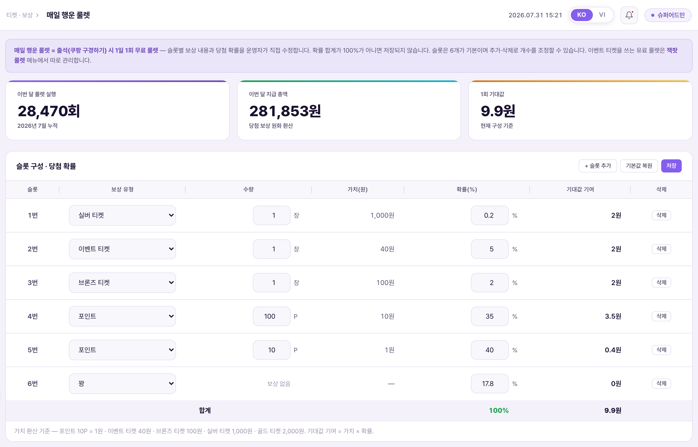
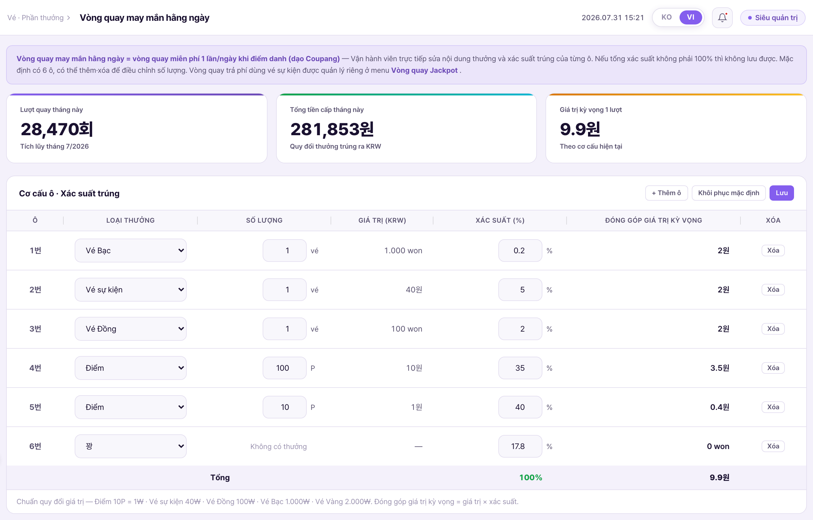
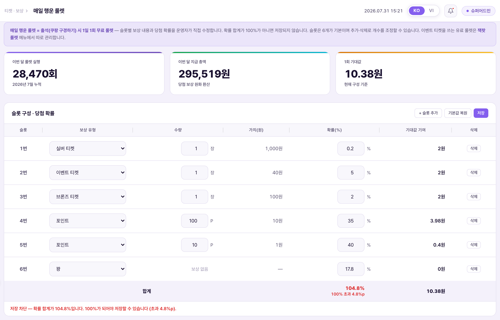
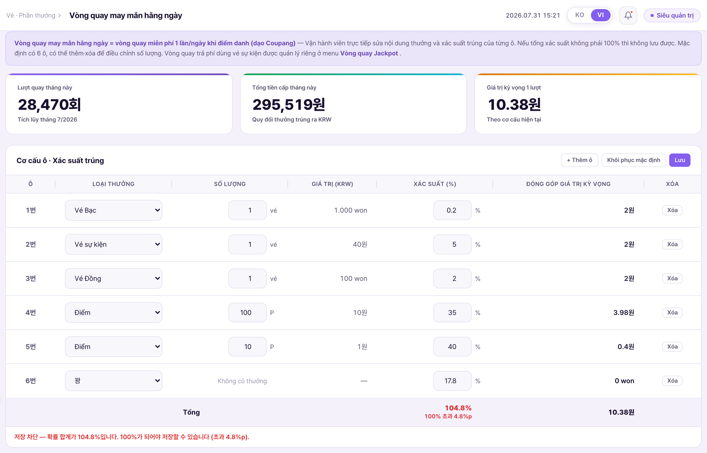
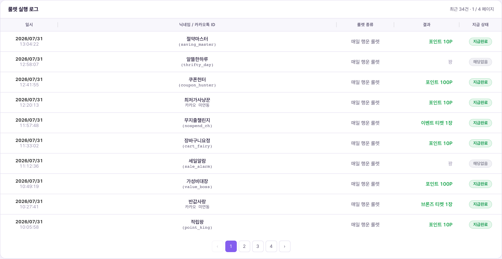
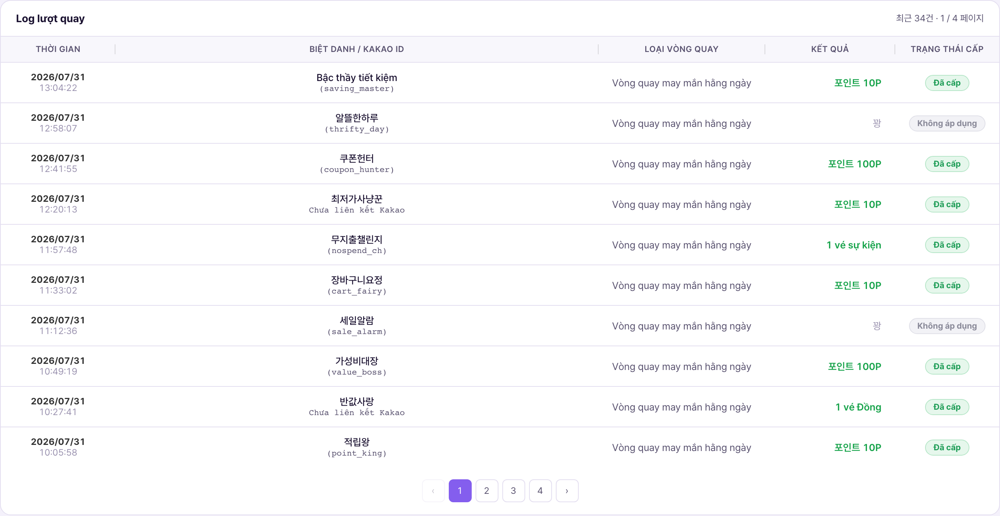

1. 한 줄 정의1. Định nghĩa một dòng
룰렛은 매일 행운 룰렛(무료)과 잭팟 룰렛(유료 · 이벤트 티켓 1장 = 1회) 2종이며, 각각 별도 메뉴에서 관리한다. 두 화면은 구조가 같고 보상 구성·확률·제한 정책만 다르다. 잭팟 룰렛은 잭팟 룰렛 설명서를 참고한다.Có 2 loại vòng quay: Vòng quay may mắn hằng ngày (miễn phí) và Vòng quay Jackpot (trả phí · 1 vé sự kiện = 1 lượt), mỗi loại được quản lý ở menu riêng. Hai màn hình có cấu trúc giống nhau, chỉ khác cơ cấu thưởng·xác suất·chính sách giới hạn. Về Vòng quay Jackpot xem tài liệu Vòng quay Jackpot.
2. 메뉴 위치2. Vị trí menu
좌측 메뉴 티켓 · 보상 그룹 안, 주간 이벤트 추첨 관리 아래에 매일 행운 룰렛 · 잭팟 룰렛이 나란히 있다. 메뉴명에는 "설정"·"관리" 같은 단어를 붙이지 않고 룰렛 이름만 쓴다.Trong nhóm Vé · Thưởng ở menu bên trái, ngay dưới Quản lý rút thăm sự kiện tuần là Vòng quay may mắn hằng ngày · Vòng quay Jackpot nằm cạnh nhau. Tên menu không kèm các từ như "Cài đặt"·"Quản lý", chỉ dùng tên vòng quay.


3. 화면 구성3. Cấu trúc màn hình
화면은 위에서부터 안내 박스 → 통계 카드 3장 → 슬롯 구성 · 당첨 확률 카드 → 룰렛 실행 로그 카드 순이다.Màn hình từ trên xuống gồm: hộp hướng dẫn → 3 thẻ thống kê → thẻ Cơ cấu ô · Xác suất trúng → thẻ Log lượt quay.


3-1. 통계 카드3-1. Thẻ thống kê
| 카드Thẻ | 내용Nội dung |
|---|---|
| 이번 달 룰렛 실행Lượt quay tháng này | 이번 달에 이 룰렛을 돌린 횟수. 고정값이 아니라 실행 집계다.Số lần quay vòng quay này trong tháng. Không phải giá trị cố định mà là số tổng hợp thực thi. |
| 이번 달 지급 총액Tổng tiền cấp tháng này | 당첨 보상을 원화로 환산한 이번 달 합계. 실행 횟수 × 1회 기대값으로 계산되므로, 슬롯을 고치면 이 값도 같이 움직인다.Tổng quy đổi ra KRW của thưởng trúng trong tháng. Được tính bằng số lượt × giá trị kỳ vọng 1 lượt, nên khi sửa ô thì giá trị này cũng đổi theo. |
| 1회 기대값Giá trị kỳ vọng 1 lượt | 현재 구성 기준 1회당 기대 지급액. 슬롯을 고칠 때마다 즉시 다시 계산된다. 확정 구성에서는 9.9원이다.Số tiền kỳ vọng cấp cho mỗi lượt theo cấu hình hiện tại. Tính lại ngay mỗi khi sửa ô. Ở cấu hình đã chốt là 9,9₩. |
3-2. 슬롯 구성 · 당첨 확률 표3-2. Bảng Cơ cấu ô · Xác suất trúng
표는 슬롯 / 보상 유형 / 수량 / 가치(원) / 확률(%) / 기대값 기여 6열이다. 보상 유형(드롭다운)·수량·확률 세 가지만 입력란이고, 가치와 기대값 기여는 자동 계산이라 입력할 수 없다. 슬롯은 6개 고정이라 추가·삭제 열이 없다(2026-08-03 확정).Bảng có 6 cột: Ô / Loại thưởng / Số lượng / Giá trị (KRW) / Xác suất (%) / Đóng góp giá trị kỳ vọng. Chỉ 3 mục là ô nhập — loại thưởng (dropdown)·số lượng·xác suất; giá trị và đóng góp được tính tự động. Ô cố định 6 ô nên không có cột thêm·xóa (chốt 2026-08-03).
| 컬럼Cột | 내용Nội dung |
|---|---|
| 보상 유형Loại thưởng | 드롭다운. 꽝 / 포인트 / 이벤트 티켓 / 브론즈 티켓 / 실버 티켓 / 골드 티켓 6종. 유형을 꽝으로 바꾸면 수량이 0으로 고정되고 수량 입력란 대신 "보상 없음"이 표시된다.Dropdown gồm 6 loại: Trượt / Điểm / Vé sự kiện / Vé Đồng / Vé Bạc / Vé Vàng. Khi đổi sang Trượt thì số lượng bị cố định là 0 và thay vì ô nhập sẽ hiện "Không có thưởng". |
| 수량Số lượng | 숫자 입력. 단위는 유형에 따라 자동으로 붙는다 — 포인트는 P, 티켓은 장.Nhập số. Đơn vị tự động gắn theo loại — Điểm là P, vé là vé. |
| 가치(원)Giá trị (KRW) | 자동 계산. 단위 가치 × 수량. 꽝은 —로 표시된다.Tính tự động. Giá trị đơn vị × số lượng. Trượt hiển thị —. |
| 확률(%)Xác suất (%) | 숫자 입력. 소수점 첫째 자리까지 쓴다(0.1 단위). 0~100 범위를 벗어나면 자동으로 잘린다.Nhập số. Dùng đến 1 chữ số thập phân (đơn vị 0,1). Ngoài phạm vi 0~100 sẽ tự động bị cắt. |
| 기대값 기여Đóng góp GTKV | 자동 계산. 가치 × 확률. 이 열의 합이 1회 기대값이다.Tính tự động. Giá trị × xác suất. Tổng cột này chính là giá trị kỳ vọng 1 lượt. |
| JACKPOT 표기Nhãn JACKPOT | 가치(원)이 가장 높은 슬롯의 가치 옆에 JACKPOT 배지가 자동으로 붙는다. 확률이 아니라 가치 기준이다 — 확률만 바꿔도 표기가 엉뚱한 칸으로 옮겨가지 않는다. 동점이면 최대 2칸까지 붙는다.Huy hiệu JACKPOT tự động gắn cạnh giá trị của ô có giá trị (KRW) cao nhất. Tiêu chí là giá trị chứ không phải xác suất — đổi mỗi xác suất thì nhãn không nhảy sang ô khác. Nếu bằng nhau thì gắn tối đa 2 ô. |
카드 헤더에는 기본값 복원 · 저장 2개 버튼이 있다. 슬롯 6개 고정 확정(2026-08-03)으로 "+ 슬롯 추가" 버튼과 행별 "삭제" 버튼은 제거됐다.Trên header của thẻ có 2 nút: Khôi phục mặc định · Lưu. Do chốt cố định 6 ô (2026-08-03), nút "+ Thêm ô" và nút "Xóa" ở từng dòng đã bị gỡ bỏ.
| 버튼Nút | 동작Hành vi |
|---|---|
| 기본값 복원Khôi phục mặc định | 확정 기본값(6슬롯 · 합계 100% · 기대값 9.9원)으로 되돌린다. 되돌린 뒤에도 저장을 눌러야 반영된다.Trả về giá trị mặc định đã chốt (6 ô · tổng 100% · GTKV 9,9₩). Sau khi trả về vẫn phải bấm Lưu mới được áp dụng. |
| 저장Lưu | 검증을 통과하면 저장한다. 검증 내용은 5번 참고.Lưu nếu qua được kiểm tra. Nội dung kiểm tra xem mục 5. |
3-3. 가치 환산 기준3-3. Chuẩn quy đổi giá trị
가치와 기대값은 아래 환산표로 자동 계산된다. 환산표는 코드 상수 한 곳(RLT_REWARD_TYPES)에만 있어서, 값이 바뀌면 두 룰렛 화면의 표·합계·통계가 전부 따라온다. 표 아래 회색 줄에도 같은 기준이 항상 표시된다.Giá trị và giá trị kỳ vọng được tính tự động theo bảng quy đổi dưới. Bảng quy đổi chỉ nằm ở một hằng số trong code (RLT_REWARD_TYPES), nên khi giá trị đổi thì bảng·tổng·thống kê của cả hai màn vòng quay đều theo. Dòng xám dưới bảng cũng luôn hiện chuẩn này.
| 보상 유형Loại thưởng | 단위 가치Giá trị đơn vị |
|---|---|
| 포인트Điểm | 10P = 1원10P = 1₩ |
| 이벤트 티켓Vé sự kiện | 40원 / 장 — 잭팟 룰렛 1회 기대값과 같은 값40₩ / vé — bằng giá trị kỳ vọng 1 lượt của Vòng quay Jackpot |
| 브론즈 티켓Vé Đồng | 100원 / 장100₩ / vé |
| 실버 티켓Vé Bạc | 1,000원 / 장1.000₩ / vé |
| 골드 티켓Vé Vàng | 2,000원 / 장2.000₩ / vé |
| 꽝Trượt | 0 |
4. 확정 슬롯 구성4. Cấu hình ô đã chốt
기본값으로 저장돼 있는 구성이다. 6슬롯 · 확률 합계 100% · 1회 기대값 9.9원.Đây là cấu hình đang được lưu làm mặc định. 6 ô · tổng xác suất 100% · giá trị kỳ vọng 1 lượt 9,9₩.
| 슬롯Ô | 보상Thưởng | 가치Giá trị | 확률Xác suất | 기대값 기여Đóng góp GTKV |
|---|---|---|---|---|
| 1 | 실버 티켓 1장Vé Bạc 1 vé | 1,000원₩ | 0.2% | 2.0 |
| 2 | 이벤트 티켓 1장Vé sự kiện 1 vé | 40원₩ | 5% | 2.0 |
| 3 | 브론즈 티켓 1장Vé Đồng 1 vé | 100원₩ | 2% | 2.0 |
| 4 | 포인트 100PĐiểm 100P | 10원₩ | 35% | 3.5 |
| 5 | 포인트 10PĐiểm 10P | 1원₩ | 40% | 0.4 |
| 6 | 꽝Trượt | — | 17.8% | 0 |
| 합계Tổng | 100% | 9.9 | ||
꽝은 17.8%로 6슬롯 중 가장 큰 단일 확률이 아니다 — 10P(40%)·100P(35%) 다음이다. 실질 당첨률은 82.2%이고, 그중 대부분이 소액 포인트다.Trượt là 17,8% — không phải xác suất đơn lẻ lớn nhất trong 6 ô, mà đứng sau 10P (40%)·100P (35%). Tỷ lệ trúng thực tế là 82,2%, và phần lớn trong đó là điểm giá trị nhỏ.
5. 저장 검증5. Kiểm tra khi lưu
저장 버튼을 누르면 두 가지를 순서대로 검사하고, 하나라도 걸리면 저장하지 않고 표 아래 안내 줄이 빨간 문구로 바뀐다.Khi bấm nút Lưu, hệ thống kiểm tra 2 điều theo thứ tự; nếu vướng bất kỳ điều nào thì không lưu và dòng hướng dẫn dưới bảng chuyển thành chữ đỏ.
| 검사Kiểm tra | 차단 조건과 표시Điều kiện chặn và hiển thị |
|---|---|
| 확률 합계 100%Tổng xác suất 100% | 합계가 100%가 아니면 차단. 얼마나 넘치거나 모자란지를 %p 단위로 알려준다 — "저장 차단 — 확률 합계가 104.8%입니다. 100%가 되어야 저장할 수 있습니다 (초과 4.8%p)." 합계 행의 확률 값도 빨간색으로 바뀌고 바로 아래 "100% 초과 4.8%p"가 붙는다.Chặn nếu tổng không phải 100%. Báo rõ thừa hoặc thiếu bao nhiêu theo đơn vị %p — "Chặn lưu — tổng xác suất là 104,8%. Phải bằng 100% mới lưu được (vượt 4,8%p)." Giá trị xác suất ở dòng tổng cũng chuyển đỏ và ngay dưới hiện "Vượt 4,8%p so với 100%". |
| 수량 0 슬롯Ô có số lượng 0 | 꽝이 아닌데 수량이 0인 슬롯이 있으면 차단. 몇 번 슬롯인지 짚어 준다 — "저장 차단 — 3번 슬롯의 수량이 0입니다. 꽝이 아닌 슬롯은 수량이 1 이상이어야 합니다."Chặn nếu có ô không phải Trượt mà số lượng bằng 0. Chỉ rõ là ô số mấy — "Chặn lưu — số lượng của ô số 3 bằng 0. Ô không phải Trượt thì số lượng phải từ 1 trở lên." |


6. 룰렛 실행 로그6. Log lượt quay
화면 맨 아래 카드. 실행 이력이 최신순으로 쌓이고 10건 단위로 페이지가 나뉜다. 카드 헤더 오른쪽에 "최근 N건 · 현재/전체 페이지"가 표시된다.Thẻ dưới cùng màn hình. Lịch sử lượt quay xếp theo thứ tự mới nhất và chia trang 10 dòng. Bên phải header thẻ hiện "N lượt gần đây · trang hiện tại/tổng".
| 컬럼Cột | 내용Nội dung |
|---|---|
| 일시Thời điểm | 2행. 윗줄 날짜, 아랫줄 시각.2 dòng. Dòng trên là ngày, dòng dưới là giờ. |
| 닉네임 / 카카오톡 IDBiệt danh / Kakao ID | 2행. 윗줄 닉네임, 아랫줄 괄호 안 카카오 로그인 ID. 미연동 회원은 괄호 없이 "카카오 미연동"으로 표시된다.2 dòng. Dòng trên là biệt danh, dòng dưới là Kakao login ID trong ngoặc. Hội viên chưa liên kết hiện "Chưa liên kết Kakao" không có ngoặc. |
| 룰렛 종류Loại vòng quay | 이 화면의 로그는 전부 "매일 행운 룰렛"이다. 잭팟 룰렛 실행은 잭팟 룰렛 화면의 로그에만 쌓인다 — 두 로그는 섞이지 않는다.Log ở màn này toàn bộ là "Vòng quay may mắn hằng ngày". Lượt quay Jackpot chỉ chất ở log của màn Vòng quay Jackpot — hai log không trộn lẫn. |
| 결과Kết quả | 당첨 슬롯의 보상과 수량(예: 포인트 100P, 브론즈 티켓 1장)을 초록으로. 꽝은 회색 "꽝".Thưởng và số lượng của ô trúng (vd: Điểm 100P, Vé Đồng 1 vé) màu xanh lá. Trượt hiện chữ xám "Trượt". |
| 지급 상태Trạng thái cấp | 뱃지 3종 — 지급완료(초록) / 한도초과(주황, 이벤트 티켓 발급 한도에 걸려 미지급) / 해당없음(회색, 꽝).3 badge — Đã cấp (xanh lá) / Vượt hạn mức (cam, chạm trần phát hành vé sự kiện nên không cấp) / Không áp dụng (xám, Trượt). |


7. 앱 연동 · 확률 공시7. Liên kết app · Công bố xác suất
저장한 구성은 앱이 다음 진입 시 읽어 반영한다. 저장 성공 시 표 아래 줄이 "저장 완료 — 슬롯 6개 · 확률 합계 100% · 1회 기대값 9.9원. 앱은 다음 진입 시 이 구성을 읽어 룰렛을 렌더링합니다."로 바뀐다. 이미 룰렛 화면을 열어 둔 사용자에게는 소급되지 않는다.Cấu hình đã lưu sẽ được app đọc và áp dụng ở lần vào tiếp theo. Khi lưu thành công, dòng dưới bảng đổi thành "Lưu xong — 6 ô · tổng xác suất 100% · giá trị kỳ vọng 1 lượt 9,9₩. App sẽ đọc cấu hình này ở lần vào tiếp theo để render vòng quay." Không hồi tố với người dùng đang mở sẵn màn vòng quay.
앱 표시 정책 — 룰렛 확률표를 앱 내에 공시하고, 꽝이 있다는 점을 명시한다. 공시되는 값은 이 화면에 저장된 확률과 같아야 한다.Chính sách hiển thị trên app — công bố bảng xác suất vòng quay trong app và ghi rõ là có ô trượt. Giá trị công bố phải khớp với xác suất đã lưu ở màn này.
8. 잭팟 룰렛과의 차이8. Khác biệt với Vòng quay Jackpot
| 항목Mục | 매일 행운 룰렛Vòng quay may mắn hằng ngày | 잭팟 룰렛Vòng quay Jackpot |
|---|---|---|
| 참여 비용Chi phí tham gia | 무료Miễn phí | 이벤트 티켓 1장 = 1회1 vé sự kiện = 1 lượt |
| 진입 조건Điều kiện vào | 출석(쿠팡 구경하기) 시 1일 1회1 lần/ngày khi điểm danh (dạo Coupang) | 이벤트 티켓 보유 시 (하루 최대 10회)Khi có vé sự kiện (tối đa 10 lượt/ngày) |
| 1회 기대값GTKV 1 lượt | 9.9원₩ | 40원₩ |
| 최고 슬롯Ô cao nhất | 실버 티켓 1장 (0.2%)Vé Bạc 1 vé (0,2%) | 골드 티켓 1장 (0.4%)Vé Vàng 1 vé (0,4%) |
| 꽝 확률Xác suất trượt | 17.8% | 31.6% |
| 참여 제한 카드Thẻ giới hạn tham gia | 없음 (1일 1회로 이미 제한됨)Không có (đã bị giới hạn bởi 1 lần/ngày) | 있음 (악용 방지 3종)Có (3 cơ chế chống lạm dụng) |
9. 데이터 소스9. Nguồn dữ liệu
| 값Giá trị | 출처Nguồn |
|---|---|
| 보상 유형 · 단위 가치Loại thưởng · giá trị đơn vị | RLT_REWARD_TYPES — 두 룰렛이 공유하는 상수hằng số dùng chung cho cả hai vòng quay |
| 기본 슬롯 구성Cấu hình ô mặc định | RLT_KINDS.daily.defaults — "기본값 복원"이 되돌리는 대상đối tượng mà "Khôi phục mặc định" trả về |
| 이번 달 실행 횟수Số lượt trong tháng | RLT_KINDS.daily.monthSpins |
| 실행 로그Log lượt quay | RLT_LOG_ROWS.daily — 10건 단위 페이지네이션(RLT_LOG_PAGE_SIZE)phân trang 10 dòng (RLT_LOG_PAGE_SIZE) |
렌더·검증·저장 로직은 두 룰렛이 한 벌을 공유하고 종류(kind)로만 갈라 쓴다. 그래서 이 화면에 생긴 동작 변경은 잭팟 룰렛에도 그대로 적용된다.Logic render·kiểm tra·lưu được cả hai vòng quay dùng chung một bộ, chỉ tách theo loại (kind). Vì vậy thay đổi hành vi phát sinh ở màn này cũng áp dụng nguyên vẹn cho Vòng quay Jackpot.